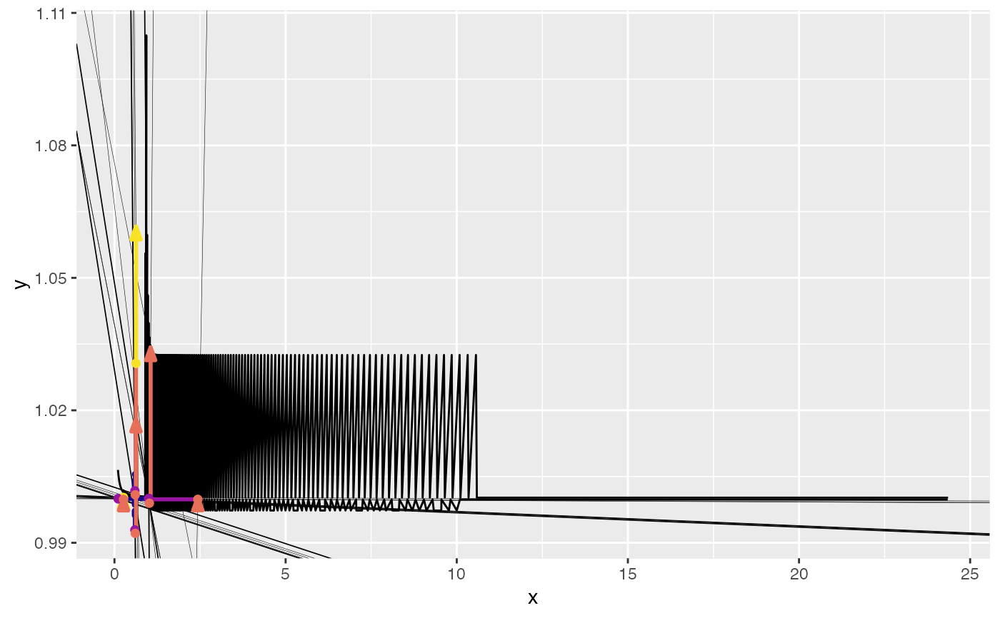

path_graphs.RdCreate rebound graphs
path_graphs( .analysis_data, indexed = FALSE, cases = .analysis_data[[case_colname]] %>% unique(), graph_types = ReboundTools::graph_types, grid_types = ReboundTools::graph_types, graph_params = ReboundTools::path_graph_params, case_colname = ReboundTools::eeu_base_params$case, rebound_stages = ReboundTools::rebound_stages, rebound_segments = ReboundTools::rebound_segments, graph_df_colnames = ReboundTools::graph_df_colnames )
| .analysis_data | Rebound analysis data, likely created by |
|---|---|
| indexed | A boolean that tells whether to index the graph to its initial path point. Default is |
| cases | A string list saying which cases in |
| graph_types | A string list of graph types to include in the returned object. Default is |
| grid_types | A string list of graph types on which grids (guide lines) are to be included. Default is |
| graph_params | A string list of parameters that control the appearance of this graph.
Default is |
| case_colname | The name of the Case column in |
| rebound_stages | |
| rebound_segments | |
| graph_df_colnames | The names of column names in data frames of graph data. Default is |
A ggplot2 object with the graphs
